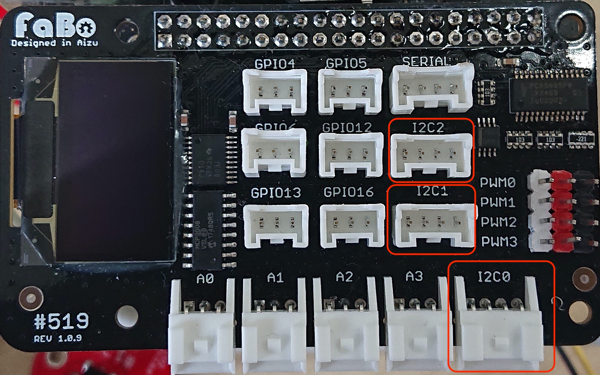

214 OLED
サンプルコードの動作
有機ディスプレイに表示します。
サンプルコード使用時の接続
FaBo #214 OLEDをI2C0,I2C1,I2C2のいずれかに接続します。

import time
import Adafruit_GPIO.SPI as SPI
import Adafruit_SSD1306
from PIL import Image
from PIL import ImageDraw
from PIL import ImageFont
import subprocess
# Raspberry Pi pin configuration:
RST = None # on the PiOLED this pin isnt used
# Note the following are only used with SPI:
DC = 23
SPI_PORT = 0
SPI_DEVICE = 0
# Beaglebone Black pin configuration:
# RST = 'P9_12'
# Note the following are only used with SPI:
# DC = 'P9_15'
# SPI_PORT = 1
# SPI_DEVICE = 0
# 128x32 display with hardware I2C:
disp = Adafruit_SSD1306.SSD1306_128_32(rst=RST, i2c_bus=1)
# 128x64 display with hardware I2C:
# disp = Adafruit_SSD1306.SSD1306_128_64(rst=RST)
# Note you can change the I2C address by passing an i2c_address parameter like:
# disp = Adafruit_SSD1306.SSD1306_128_64(rst=RST, i2c_address=0x3C)
# Alternatively you can specify an explicit I2C bus number, for example
# with the 128x32 display you would use:
# disp = Adafruit_SSD1306.SSD1306_128_32(rst=RST, i2c_bus=2)
# 128x32 display with hardware SPI:
# disp = Adafruit_SSD1306.SSD1306_128_32(rst=RST, dc=DC, spi=SPI.SpiDev(SPI_PORT, SPI_DEVICE, max_speed_hz=8000000))
# 128x64 display with hardware SPI:
# disp = Adafruit_SSD1306.SSD1306_128_64(rst=RST, dc=DC, spi=SPI.SpiDev(SPI_PORT, SPI_DEVICE, max_speed_hz=8000000))
# Alternatively you can specify a software SPI implementation by providing
# digital GPIO pin numbers for all the required display pins. For example
# on a Raspberry Pi with the 128x32 display you might use:
# disp = Adafruit_SSD1306.SSD1306_128_32(rst=RST, dc=DC, sclk=18, din=25, cs=22)
# Initialize library.
disp.begin()
# Clear display.
disp.clear()
disp.display()
# Create blank image for drawing.
# Make sure to create image with mode '1' for 1-bit color.
width = disp.width
height = disp.height
image = Image.new('1', (width, height))
# Get drawing object to draw on image.
draw = ImageDraw.Draw(image)
# Draw a black filled box to clear the image.
draw.rectangle((0,0,width,height), outline=0, fill=0)
# Draw some shapes.
# First define some constants to allow easy resizing of shapes.
padding = -2
top = padding
bottom = height-padding
# Move left to right keeping track of the current x position for drawing shapes.
x = 0
# Load default font.
font = ImageFont.load_default()
# Alternatively load a TTF font. Make sure the .ttf font file is in the same directory as the python script!
# Some other nice fonts to try: http://www.dafont.com/bitmap.php
# font = ImageFont.truetype('Minecraftia.ttf', 8)
while True:
# Draw a black filled box to clear the image.
draw.rectangle((0,0,width,height), outline=0, fill=0)
# Shell scripts for system monitoring from here : https://unix.stackexchange.com/questions/119126/command-to-display-memory-usage-disk-usage-and-cpu-load
cmd = "hostname -I | cut -d\' \' -f1"
IP = subprocess.check_output(cmd, shell = True )
cmd = "top -bn1 | grep load | awk '{printf \"CPU Load: %.2f\", $(NF-2)}'"
CPU = subprocess.check_output(cmd, shell = True )
cmd = "free -m | awk 'NR==2{printf \"Mem: %s/%sMB %.2f%%\", $3,$2,$3*100/$2 }'"
MemUsage = subprocess.check_output(cmd, shell = True )
cmd = "df -h | awk '$NF==\"/\"{printf \"Disk: %d/%dGB %s\", $3,$2,$5}'"
Disk = subprocess.check_output(cmd, shell = True )
# Write two lines of text.
draw.text((x, top), "IP: " + str(IP), font=font, fill=255)
draw.text((x, top+8), str(CPU), font=font, fill=255)
draw.text((x, top+16), str(MemUsage), font=font, fill=255)
draw.text((x, top+25), str(Disk), font=font, fill=255)
# Display image.
disp.image(image)
disp.display()
time.sleep(.1)